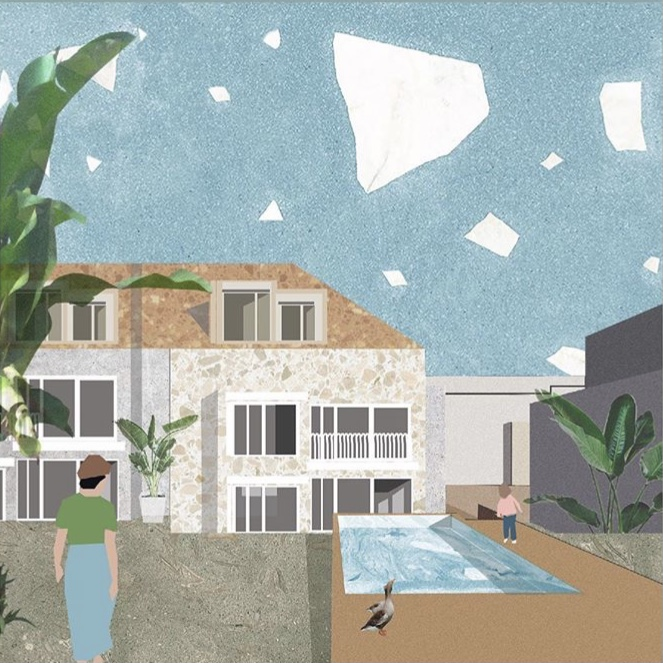
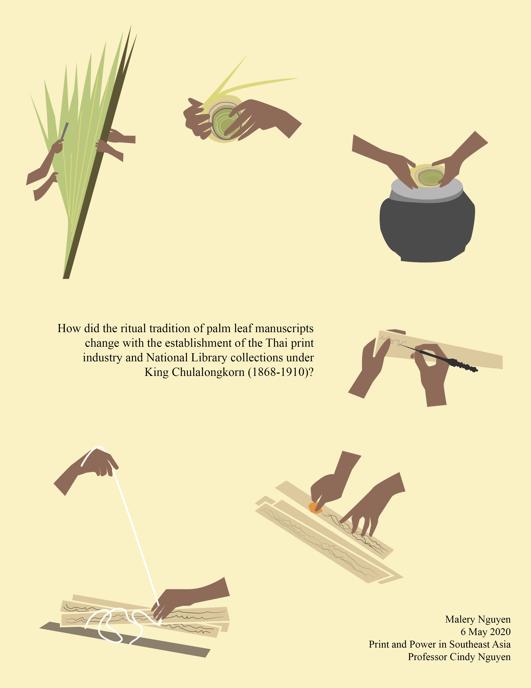
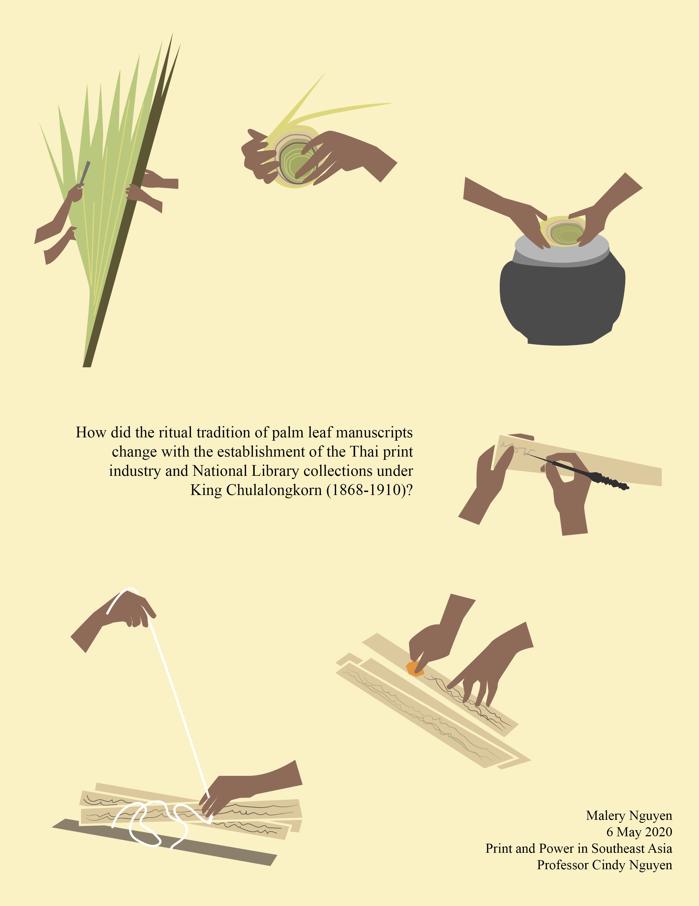
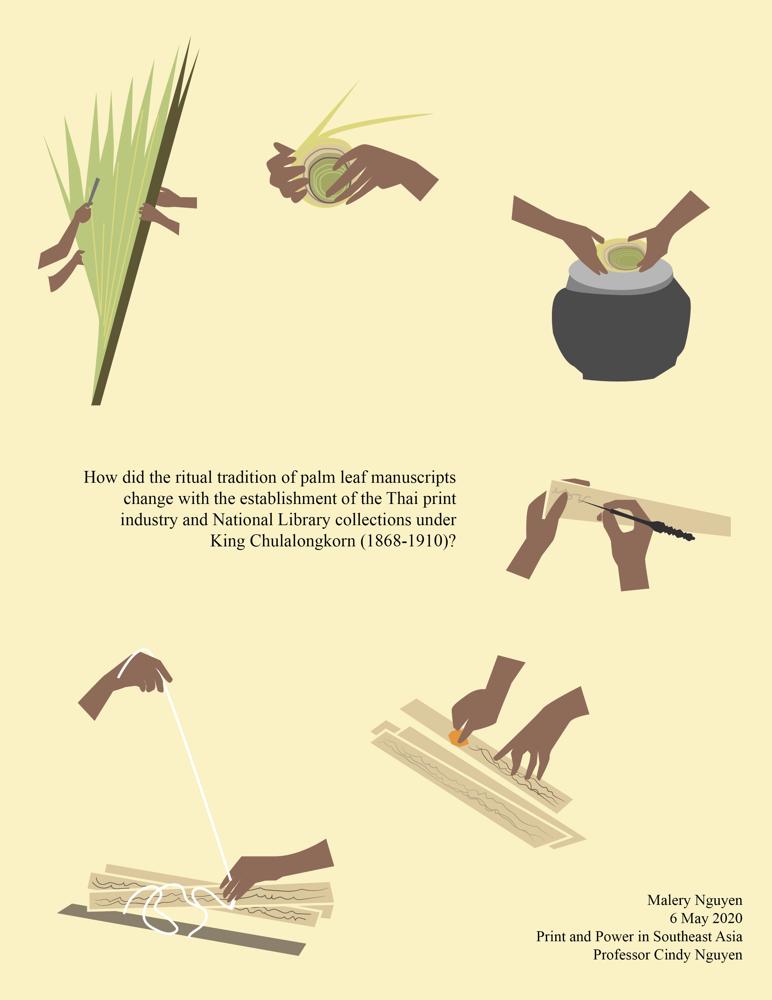

other works
things that don't quite fit in with the rest

 



A few other endeavors that represent important projects and interests in my life. The stories of these works are either too personal or peripheral to the rest of my portfolio, which is why they fall here. Nonetheless, they feel important to document, and I would be happy to talk more about them given the chance.